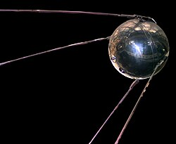
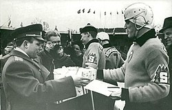
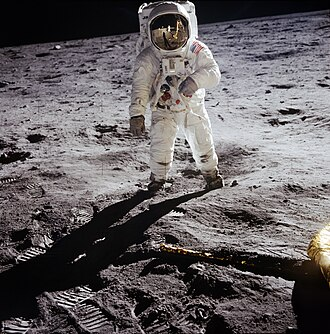
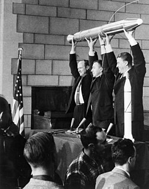
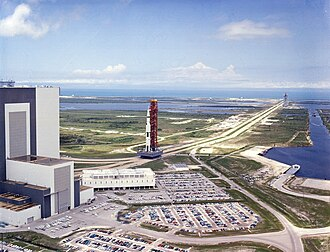
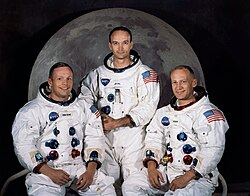
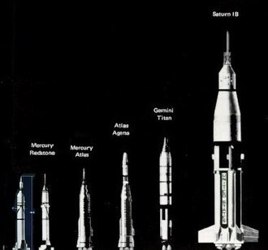

The Space Race
From Sputnik to the Moon · The Cold War's Greatest Technological Rivalry
October 4, 1957 – December 19, 1972 · 15 Years of Humanity Leaving Earth
1957
Sputnik Launch — Space Age Begins
12
Humans Who Walked on the Moon
842 lbs
Moon Rocks Returned to Earth
1969
Year of the Moon Landing
Key Missions
The milestones that defined the Space Race — Soviet firsts and American victories

SovietSputnik 1
October 4, 1957 · First Satellite Ever
Humanity's first artificial satellite. Weighing 183 lbs, it completed an orbit every 98 minutes broadcasting a "beep beep" radio signal. The sound shocked the world and launched the Space Age. Americans could hear it on shortwave radios.
Soviet
Laika & Sputnik 2
November 3, 1957 · First Living Creature in Orbit
A stray dog named Laika became the first animal in orbit. The Soviets claimed she survived days; in truth she died within hours from overheating. The lie wasn't revealed for decades. Sputnik 2 had no re-entry system — Laika could never come home.

SovietYuri Gagarin / Vostok 1
April 12, 1961 · First Human in Space
A 27-year-old Air Force pilot completed a 108-minute orbit of Earth at 17,500 mph. His words before launch: "Poyekhali!" — "Off we go!" Gagarin became the most famous person on the planet overnight. The feat stunned the West and electrified the Kremlin.
Soviet
Valentina Tereshkova
June 16–19, 1963 · First Woman in Space
A textile factory worker and amateur parachutist, Tereshkova completed 48 orbits over 3 days aboard Vostok 6 — more time in space than all US astronauts combined at that point. No woman would fly in space again for 19 years.
American
Alan Shepard
May 5, 1961 · First American in Space
Three weeks after Gagarin, Shepard rode Freedom 7 on a 15-minute suborbital arc. It wasn't an orbit — but it was America's first man in space. His cool, test-pilot demeanor under pressure made him a national hero instantly.
American
John Glenn / Friendship 7
February 20, 1962 · First American to Orbit Earth
Glenn became the first American to orbit Earth, completing 3 orbits in 4 hours 55 minutes. A faulty sensor warning about the heat shield kept mission controllers on edge throughout re-entry. Glenn survived. America finally had an orbital hero.
American
Apollo 8
December 21–27, 1968 · First Humans to Orbit the Moon
Borman, Lovell, and Anders became the first humans to leave Earth's gravity and orbit another world. Anders' "Earthrise" photograph — our pale blue planet rising over the lunar horizon — became one of the most influential images in history.

AmericanApollo 11
July 20, 1969 · First Moon Landing
Neil Armstrong and Buzz Aldrin landed the Eagle in the Sea of Tranquility while Michael Collins orbited above. Armstrong's first step was watched by 600 million people — 20% of all humanity at the time. "One small step for man, one giant leap for mankind."
Rockets of the Space Race
Thrust bars show percentage of Saturn V's 7.5 million lb-force — the most powerful rocket ever flown
Soviet
R-7 Semyorka
Designed as a nuclear missile capable of reaching the United States, Korolev secretly repurposed it to launch Sputnik. The first true intercontinental ballistic missile shocked Western intelligence. It became the workhorse of early Soviet space launches.
Thrust: 272,000 lbf3.6% of Saturn V
Soviet
Vostok Rocket
A modified R-7 with an upper stage, the Vostok rocket carried Gagarin and Tereshkova to orbit. Simple, reliable, and still in active use today (as the Soyuz family), it became the longest-flying crewed rocket design in history.
Thrust: ~880,000 lbf (all stages)11.7% of Saturn V
Soviet
N1 Moon Rocket
The Soviet answer to Saturn V. Driven by 30 NK-15 engines in its first stage, it was plagued by inadequate testing and inter-bureau politics. All four launch attempts ended in catastrophic failure. The July 1969 explosion — 2,750 tons of propellant — was the largest non-nuclear explosion in history. The program was secretly cancelled.
Thrust: 10.2M lbf (design)136% of Saturn V (never achieved)
American
Redstone
Derived from a battlefield ballistic missile, the Redstone was only powerful enough for suborbital Mercury flights. Wernher von Braun's team at Huntsville developed it. It sent Shepard and Grissom on America's first trips to space — brief but vital confidence builders.
Thrust: 78,000 lbf1.04% of Saturn V
American
Atlas D
The Atlas was America's first ICBM, barely powerful enough to reach orbit with a single astronaut. So thin-walled it would collapse under its own weight without internal pressurization, astronauts called it "a balloon." It worked — John Glenn orbited Earth three times aboard one.
Thrust: 360,000 lbf4.8% of Saturn V
American
Saturn V
363 feet tall. 6.2 million lbs at launch. Its five F-1 engines each burned 3 tons of propellant per second, generating a combined 7.5 million lbs of thrust — shaking windows 100 miles away at liftoff. Flew 13 times. Never failed. Sent 24 humans to the Moon. Nothing built since has surpassed it.
Thrust: 7,500,000 lbf100% — The Benchmark
Key Figures
The engineers, cosmonauts, and mathematicians who made the Space Race possible
Wernher von Braun
NASA Chief Designer · Saturn V Architect
A former Nazi SS officer who designed the V-2 rockets that killed thousands in London and Antwerp, von Braun surrendered to the Americans in 1945 and became the visionary behind NASA's rocket program. His moral contradictions were immense; his technical genius was undeniable. He built the Saturn V that sent men to the Moon.
Sergei Korolev
Soviet "Chief Designer" · Mastermind of Sputnik & Vostok
The Soviets kept his identity completely secret to prevent him from being assassinated. A gulag survivor who spent six years in Stalin's camps, Korolev designed Sputnik, the Vostok capsule, and planned the Soviet Moon program. He died on the operating table in January 1966 — only then was his identity revealed to the world.
Yuri Gagarin
First Human in Space · "Columbus of the Cosmos"
The son of a carpenter, Gagarin was chosen from 20 finalists partly for his warm smile and ability to connect with ordinary people. His 108-minute flight made him the most famous human alive. He was grounded by nervous Soviet officials who feared losing him — then died in a routine MiG-15 training flight in 1968, at age 34. Russia still mourns him.
Neil Armstrong
First Human on the Moon · Apollo 11 Commander
A quiet, brilliant test pilot from Ohio who had flown the X-15 to the edge of space. Armstrong was chosen to be first partly because he was not boastful. After Apollo 11, he gave almost no interviews, refused autographs, and returned to academia. He called fame "an uncomfortable thing." He died in 2012, aged 82 — the most famous recluse in history.
John Glenn
First American to Orbit Earth · US Senator · Oldest Astronaut
A Marine Corps fighter pilot who flew 149 combat missions in two wars before becoming a Mercury astronaut. His 1962 orbital flight made him a national hero. He became an Ohio senator and served for 24 years. In 1998, at age 77, he flew aboard the Space Shuttle Discovery — the oldest person ever to fly in space — to study geriatric physiology in microgravity.
Katherine Johnson
NASA Mathematician · Hidden Figure · Computing Hero
A Black woman from West Virginia who joined NACA (pre-NASA) in 1953 as a "computer" — a human calculator. Her orbital mechanics calculations were so trusted that John Glenn personally refused to fly unless Johnson verified the electronic computer's numbers. She computed the trajectory for Apollo 11. Her story was largely unknown until the 2016 film "Hidden Figures." She died in 2020, aged 101.
Apollo 11 — The Moon Landing
"That's one small step for man, one giant leap for mankind."
— Neil Armstrong, Sea of Tranquility, July 20, 1969, 10:56 PM EDT
238,855 mi
Distance to the Moon
8d 3h 18m
Total Mission Duration
21.5 hrs
Time on Lunar Surface
47.5 lbs
Moon Rocks Collected
Mission Timeline: July 16–24, 1969
Jul 16, 9:32 AM
Liftoff from Kennedy Space Center
Saturn V launches from Launch Complex 39A carrying Armstrong, Aldrin, and Collins. The rocket's 7.5 million lbf of thrust is felt 50 miles away. Translunar injection burn begins the journey to the Moon.
Jul 19
Apollo 11 Enters Lunar Orbit
After three days of travel, the Service Propulsion System fires to slow the spacecraft into lunar orbit. The crew sees the Moon up close for the first time. They scout the landing site in the Sea of Tranquility.
Jul 20, 4:17 PM EDT
Eagle Lands — "The Eagle Has Landed"
Armstrong takes manual control when the computer lands them in a boulder field, overshooting by 4 miles. With 30 seconds of fuel remaining, Eagle touches down. "Houston, Tranquility Base here. The Eagle has landed." Mission Control erupts.
Jul 20, 10:56 PM EDT
Armstrong Sets Foot on the Moon
Descending the ladder, Armstrong says: "That's one small step for man, one giant leap for mankind." 600 million people — 20% of all humanity — watch on television. No moment in history was seen by more people live.
Jul 21, 12:15 AM EDT
Aldrin Joins Armstrong on the Surface
Buzz Aldrin steps out and famously describes the view as "magnificent desolation." The two spend 2 hours 31 minutes on the surface — planting the flag, collecting samples, deploying science experiments, and receiving a call from President Nixon.
Jul 21, 1:54 PM EDT
Eagle Lifts Off from the Moon
The ascent stage fires using a ballpoint pen to bridge a broken circuit switch that Aldrin noticed. Eagle rises to dock with Columbia, where Collins has been orbiting alone for 24 hours — the most isolated human being in history, cut off from all radio contact over the lunar far side.
Jul 24, 12:51 PM EDT
Splashdown in the Pacific
Columbia splashes down 900 miles southwest of Hawaii. USS Hornet recovers the crew, who are placed in a Mobile Quarantine Facility for 21 days — NASA feared they might have brought back lunar microbes. They hadn't. They were heroes in a sealed trailer.
Timeline of the Space Race · 1957–1972
Oct 1957
Sputnik 1 — The Space Age Begins
The USSR launches the first artificial satellite. The world hears its radio beeps and the Cold War enters orbit. Americans are stunned — the Soviets are ahead in space.
Nov 1957
Laika — First Animal in Orbit (Dies)
Sputnik 2 carries the dog Laika to orbit. She dies within hours. The Soviets lie for decades, claiming she survived longer. The incident sparks the first public debate about animal rights in science.
Jan 1958
Explorer 1 — First US Satellite; Van Allen Belts Discovered
America's first satellite reaches orbit and immediately makes a major scientific discovery: the Van Allen radiation belts surrounding Earth. NASA is created later the same year.

Apr 1961
Gagarin — First Human in Space
Yuri Gagarin orbits Earth in 108 minutes. "Poyekhali!" The USSR scores the most stunning victory of the Space Race. JFK is blindsided. The humiliation is total.
May 1961
JFK Pledges Moon by End of Decade
President Kennedy addresses Congress: "I believe that this nation should commit itself to achieving the goal, before this decade is out, of landing a man on the Moon." NASA's budget subsequently doubles, then triples.
Feb 1962
John Glenn Orbits Earth
Glenn becomes the first American to orbit Earth, completing 3 orbits. Americans finally feel competitive. Ticker-tape parades. He becomes the most celebrated American since Lindbergh.
Jun 1963
Tereshkova — First Woman in Space
Valentina Tereshkova orbits Earth 48 times. No woman would fly in space again for nearly two decades. The USSR scores another propaganda triumph.
Mar 1965
Leonov — First Spacewalk (EVA)
Alexei Leonov becomes the first human to walk in space. His suit inflates so much he can barely re-enter the airlock. The 12-minute EVA nearly kills him. The Soviets don't tell anyone until he's safely back inside.
Jan 1967
Apollo 1 Fire — 3 Astronauts Killed
A fire in the pure oxygen cabin of Apollo 1 during a launch rehearsal kills Gus Grissom, Ed White, and Roger Chaffee. NASA halts for 21 months to rebuild. The tragedy ultimately produces a safer, better spacecraft.
Dec 1968
Apollo 8 Orbits the Moon — Earthrise
Borman, Lovell, and Anders orbit the Moon on Christmas Eve and read from Genesis on live TV. Anders photographs Earthrise — the first time humanity sees its home planet from another world. Life magazine calls it "the photo of the century."
Jul 1969
Apollo 11 — Moon Landing
Neil Armstrong and Buzz Aldrin walk on the Moon. The Space Race ends. The United States wins. 600 million people watch. The Soviet Moon program collapses in secret. Kennedy's promise, made 8 years earlier, is kept.
Dec 1972
Apollo 17 — Last Moon Landing
Eugene Cernan becomes the last human to stand on the Moon, saying: "We leave as we came and, God willing, as we shall return, with peace and hope for all mankind." He steps off the surface at 5:40 AM on December 14. No human has returned since.
Warp Speed Starfield
Click the canvas to toggle warp speed — a rocket drifts through the stars
Gallery — The Space Race in Photographs
Buzz Aldrin on the Lunar Surface
Astronaut Buzz Aldrin stands on the Moon during Apollo 11. His visor reflects Neil Armstrong and the Lunar Module Eagle. This iconic NASA photograph, AS11-40-5931, was taken on July 20, 1969.
Sputnik 1, October 4, 1957
A replica of Sputnik 1 — the world's first artificial satellite. The 184-pound chrome sphere measured 23 inches in diameter. Its 22-day radio transmission shocked the world and launched the Space Age.
Yuri Gagarin, 1934–1968
The 27-year-old Soviet cosmonaut who became the first human in space on April 12, 1961. His 108-minute orbital flight made him the most famous person on Earth. He died in a MiG-15 training accident seven years later.

Saturn V — The Moon Rocket
The Saturn V remains the most powerful rocket ever to fly operationally. At 363 feet tall with 7.5 million pounds of thrust, it sent 24 humans to the Moon and has never been surpassed in capability.

Apollo 11 Launch, July 16, 1969
Saturn V lifts off from Launch Complex 39A at Kennedy Space Center carrying Armstrong, Aldrin, and Collins to the Moon. The launch was witnessed by an estimated one million spectators on nearby beaches and roads.

The Apollo 11 Crew
Neil Armstrong (Commander), Michael Collins (Command Module Pilot), and Buzz Aldrin (Lunar Module Pilot) — the three men who completed the first crewed Moon landing mission.
Explorer 1 — America Reaches Orbit
William Pickering, James Van Allen, and Wernher von Braun celebrate Explorer 1's successful launch in January 1958 — America's first satellite and the discovery of the Van Allen radiation belts.

Early American Rockets
The Mercury-Redstone and Mercury-Atlas rockets that launched America's first astronauts. Small by later standards, these rockets represented the beginning of the United States' climb toward the Moon.